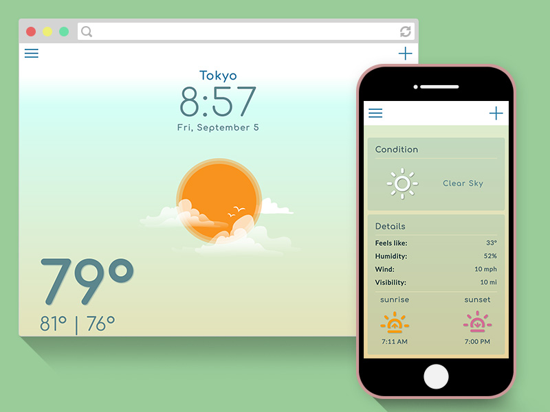
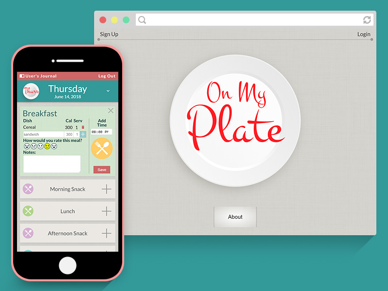

Hung T. Nguyen
Hi, I'm Hung
I come from a creative background and was problem solving with paint, pencil, and pixels. One could say that I invested my skill points to drawing and designing, but I felt that it wasn't enough so I started to code...and code. Wow, I can make an app now! And I want to make more, so feel free to contact me if you need a web developer.
Email: nguyenht33@gmail.com
Repo: Github

